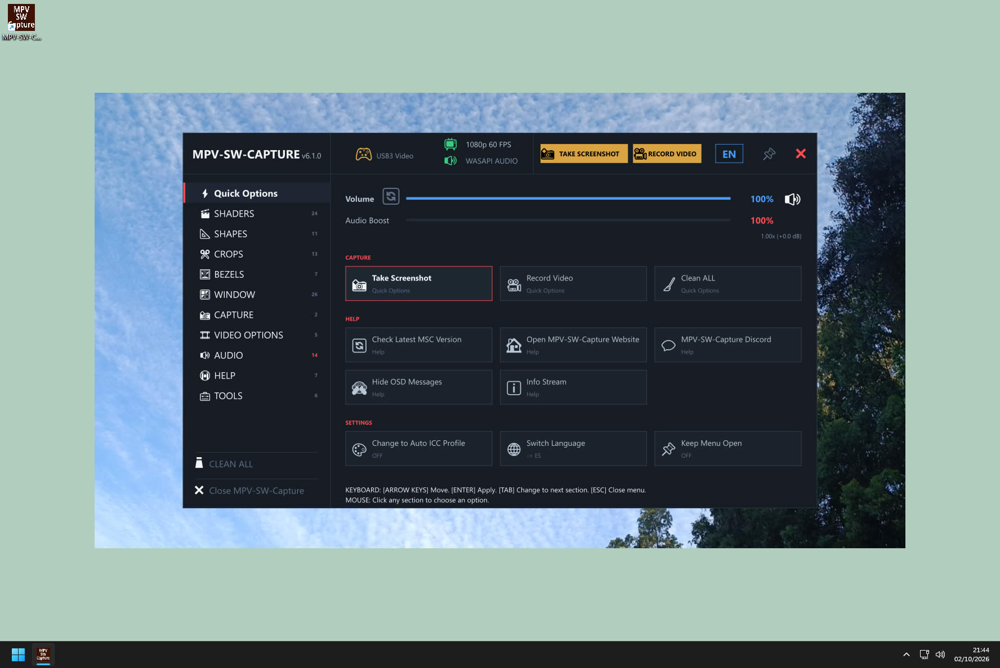

Un programa completo con configuraciones listas para MPV en Windows, optimizado para tarjetas de captura USB. Juega con cualquier consola HDMI con la menor latencia posible y un sinfín de opciones.
Haz clic en los botones para ver las diferentes funcionalidades, o pausa el modo automático.

MPV maneja el vídeo y ffplay el audio en paralelo, sincronizados para una respuesta casi instantánea.
Compatible con cualquier tarjeta de captura conectada a tu PC.
Descarga, instala y juega en minutos. Sin configuraciones complejas. Conecta tu capturadora, ejecútalo, y disfruta de tu consola con mínima latencia.
Accede a shaders, bezels, crops, ajustes de ventana, grabación y más con un clic o tecla.
Compatible con OBS, lo que te brinda una excelente experiencia con tus transmisiones.
Dale un estilo único a tu juego. Shaders y Formas para VHS, CRT, Arcade, Videojuegos y más.
Copia la carpeta en cualquier ubicación y funciona sin reinstalación. Lleva tu configuración contigo.
Graba 30/60/90/120s con buena calidad y pequeño tamaño, o toma capturas instantáneas.
Superpone bordes decorativos o recorta la pantalla al tamaño deseado.
Menú e instaladores completamente traducidos al español e inglés. Cambia con un botón.
Personaliza las opciones de video predeterminadas con los valores que desees.
Guía de Administrador de Video →Personaliza los marcos con nuevos que desees agregar.
Guía de Administrador de Marcos →Usa una herramienta para una fácil compatibilidad con OBS.
Guía del Menú de Stream →Herramienta SOLO para conectar MPV+FFPlay con OBS.
Guía del Asistente FFPlay Stream →Loading latest releases...
MPV ofrece menor latencia y una personalización más profunda (shaders, bezels, crops) mas adecuada para juegos.
Recomendado para mejor calidad y estabilidad. USB 2.0 funciona pero con rendimiento inferior.
Haz clic derecho en la ventana y se abrirá el menú. También puedes presionar ESC en tu teclado. Eso si, el mouse esté estar sobre la ventana y enfocado.
En el Setup_MPV-SW-Capture.exe pulsa el botón "MENU: English <-> Español".
En las carpetas _screenshots y _record dentro de la instalación.
Elige el perfil que mejor se adapte a tu juego. Cada fila te sugiere una combinación de shader, forma, recorte y marco que puedes activar desde el menú.
Nota: Los recortes y los marcos no se pueden combinar entre sí. Debes elegir uno u otro.
| Perfil | Shader | Forma | Recorte | Marco | Descripción |
|---|---|---|---|---|---|
| 🎮 Gaming | Sin Shader | Sin Forma | Sin Recorte | Sin Marco | Mínima latencia y máxima nitidez. Ideal para juegos modernos (Switch, PS, Xbox). |
| 👑 Gaming 4K | 👑1080p→4K Fast⚡ | Sin Forma | Sin Recorte | Sin Marco | Versión que mejora la calidad sin aumentar latencia. Ideal para monitores 4K. |
| 📺 Retro CRT | CRT Royale Kurozumi | Sin Forma | Sin Recorte | SNES BG ⌗1 (90s TV) | Experiencia auténtica de televisión de los 90 con marco decorativo. Perfecto para NSO (NES/SNES). |
| 🕹️ Arcade | CRT Arcade (Lottes) | Sin Forma | Sin Recorte | Sin Marco | Nitidez y scanlines para juegos de lucha o arcade. Sin curvatura ni bordes. |
| 📱 Portátil | GB LCD Color Screen | Sin Forma | Sin Recorte | GB Generic | Recrea la pantalla de la Game Boy con su marco y colores verdosos como la original. |
| 🔀 VHS / Nostalgia | VHS | Super Curvatura CRT | Sin Recorte | Sin Marco | Efecto cinta VHS con aberración cromática y curvatura exagerada. Muy retro. |
Puedes activar cada elemento por separado desde el menú. Estas combinaciones son solo sugerencias.